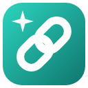

Clink
Removes tracking junk from the links you open — without breaking them.
What to remove
How Clink behaves
Skip redirect pages
Goes straight to the destination of links wrapped in
google.com/url, l.facebook.com, YouTube, Reddit, LinkedIn, Steam and other click-tracking redirects. Corporate security scanners (Outlook Safe Links etc.) are never bypassed.Block link “ping” beacons
Removes the hidden
ping attribute some sites (like Google Search) use to report every click.Clean links I copy
When you copy a web address from a page, the clean version goes on your clipboard.
Link Guard recommended
If a cleaned link ever fails to load (an error page or a redirect loop), Clink instantly reopens the original link and stops cleaning that site, so you never get stuck on a broken page.
Show count on toolbar icon
How many links Clink cleaned on the current page.
Sites where Clink is paused
Links to these sites keep their parameters, and Clink doesn’t touch links on their pages. Subdomains are included.
No paused sites.
Paused automatically by Link Guard
None — every cleaned link has worked so far.
Always left alone
- Unsubscribe, email-preference and opt-in links (they need their IDs to know who you are).
- Signed links (S3, Google Cloud, Azure, CloudFront…) — changing them would break them.
- Sign-in and checkout pages (Google, Microsoft, Apple, PayPal, Stripe, Shopify…).
- Marketing dashboards like Google Analytics and campaign URL builders.
localhost,.test,.localand private IP addresses.- Parameters that change what you see: search terms, product variants, timestamps, gift-article codes, invite codes.
Your stats
0
links cleaned
0
trackers removed
0
redirects skipped